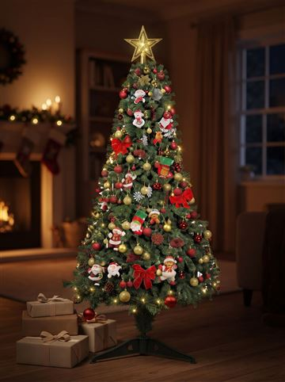
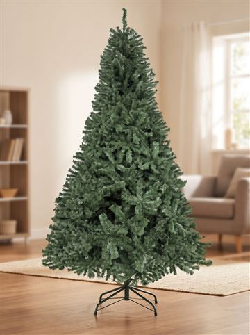
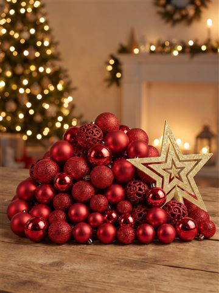
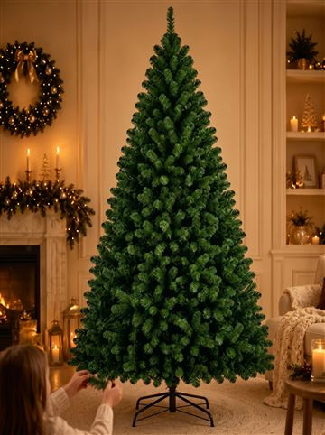

Árvore de Natal completa barata: 3 opções que chegam rápido
#publi — Os botões são links de afiliado do Mercado Livre: posso ganhar uma comissão, sem custo extra pra você. Preço e prazo mudam: confira no anúncio.
Quer uma árvore de Natal completa e barata, sem ter que comprar cada enfeite separado? Comparei as opções que mais vendem no Mercado Livre e separei 3 caminhos: a mais barata, a mais cheia e a que chega mais rápido.
💰 Mais barata: árvore 1,50 m que já vem com enfeites, pisca e estrela.
🌟 Mais bonita: árvore 2,10 m + kit 100 bolas + 3 piscas (tudo FULL).
🌲 Só a árvore, grande e cheia: 2,10 m com 1000 galhos.
Comparativo: qual árvore de Natal escolher
| Opção | Tamanho | O que vem | Entrega | Pra quem |
|---|---|---|---|---|
| Árvore completa 1,50 m | 1,50 m · 400 galhos | Árvore + enfeites + pisca + estrela | FULL | Quer gastar pouco |
| Montar a 2,10 m | 2,10 m · 1200 galhos | Peças separadas (árvore, 3 piscas, kit 100 bolas, saia) | FULL | Quer árvore grande e cheia |
| Árvore 2,10 m 1000 galhos | 2,10 m · 1000 galhos | Só a árvore (sem luz e enfeite) | FULL | Já tem enfeites em casa |
1. A mais barata: árvore de 1,50 m completa

É a opção pra quem quer tudo num pedido só: vem a árvore de 1,50 m com 400 galhos, mais de 60 enfeites variados, um pisca-pisca de 100 LEDs e a estrela.
Prós e contras
- ✅ Tudo numa caixa, um frete só
- ✅ Entrega FULL
- ⚠️ Pé de plástico (mais simples)
- ⚠️ O pisca não é bivolt: escolha 110 V ou 220 V
2. A mais bonita: monte a árvore de 2,10 m (tudo FULL)

Se você quer aquela árvore grande e cheia de foto, o caminho é comprar as peças separadas — e escolhendo tudo FULL, chega rápido.
- Árvore 2,10 m, 1200 galhos (base de metal) — ver preço
- 3 pisca-piscas de 100 LEDs branco quente — ver preço
- Kit 100 bolas + estrela vermelho — ver preço
- Saia de pelúcia 120 cm — ver preço

3. Só a árvore grande: 2,10 m com 1000 galhos

Pra quem já tem os enfeites em casa e só precisa trocar a árvore velha.
Ver preço no Mercado LivreDicas pra árvore ficar bonita
- Abra galho por galho: a árvore vem compactada; abrir bem faz ela parecer o dobro.
- Pisca primeiro, enfeite depois, de dentro pra fora.
- Uma cor só (ex.: vermelho + dourado) deixa tudo com cara de árvore de loja.
- Árvore de 2,10 m: 3 piscas e uns 100 enfeites.
Perguntas frequentes
Qual árvore de Natal completa é mais barata?
A de 1,50 m que já vem com enfeites, pisca e estrela num pedido só. Confira o preço do dia no link.
Quantos pisca-piscas precisa pra árvore de 2,10 m?
Uns 300 LEDs, ou seja, 3 cordões de 100.
Árvore FULL chega antes do Natal?
FULL costuma ser rápido, mas o prazo depende do seu CEP: confira no anúncio antes de comprar.
Veja mais achadinhos de Natal na nossa página de ofertas.